Billing for Travelling
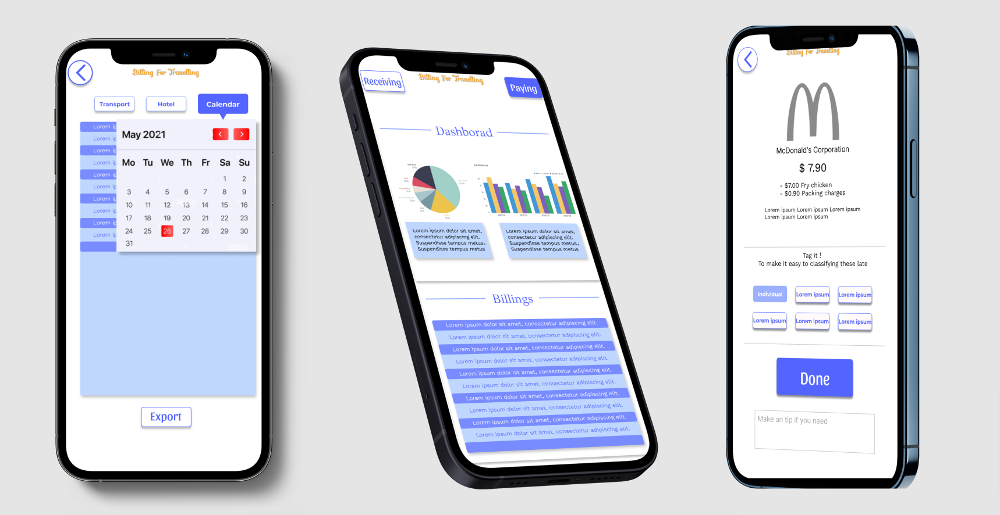
Background
Billing for Travelling APP is one of the projects in Google UX design certificate. It solves Google's design challenges according to UX design process, method and paradigm. The whole project lasted two months, which helped me have a deeper understanding of UX design.
Challenge
" Design a client billing app for a traveler. "
Solutions
Provide electronic payment and expense statistics for people travelling.
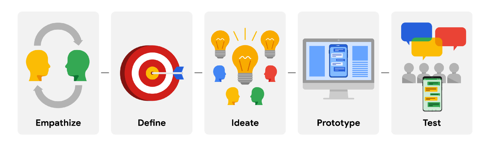
Research
I interviewed some target users through video interviews and face-to-face communication.
Persona
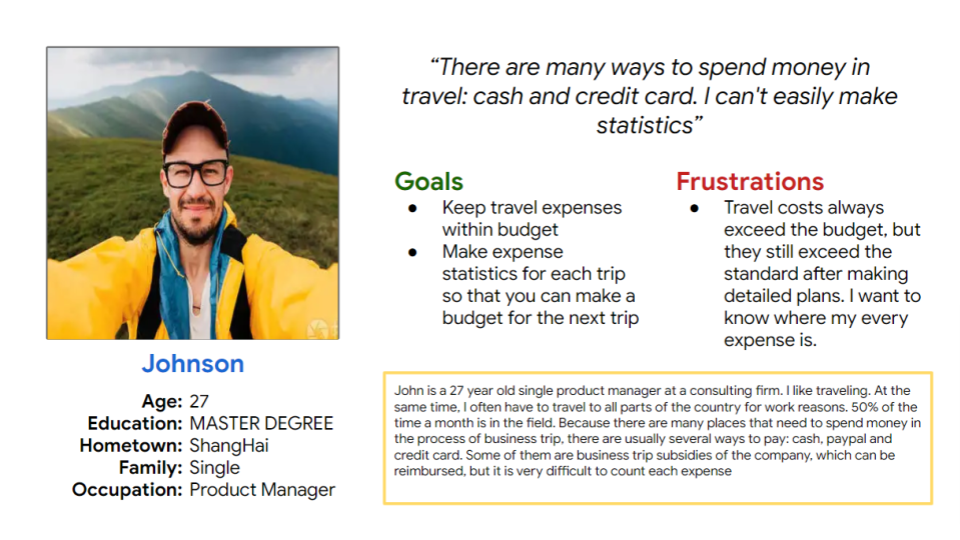
Problem statement: Johnson is a 27 years old business travellers who needs calculate the business-related part of travel expenses because statistics will be used for company reimbursement.
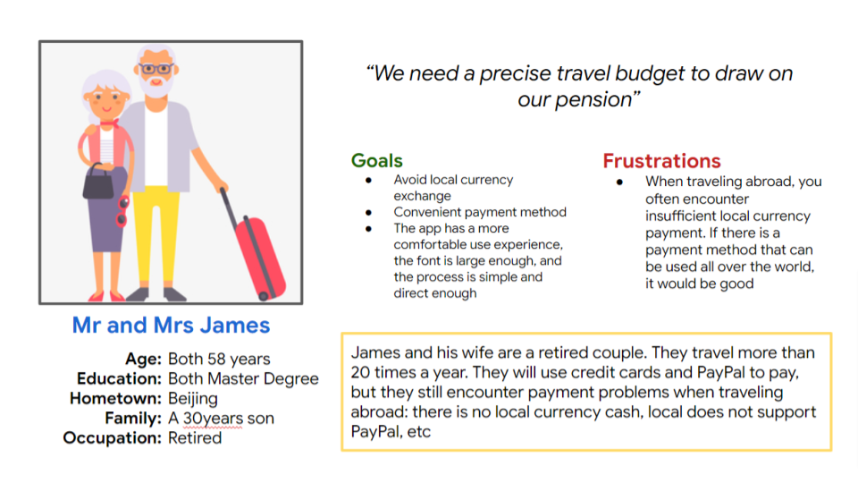
Problem statement: Mr and Mrs James a retired couple who needs budget their next trip because prepare funds and control expenses.
User journey map
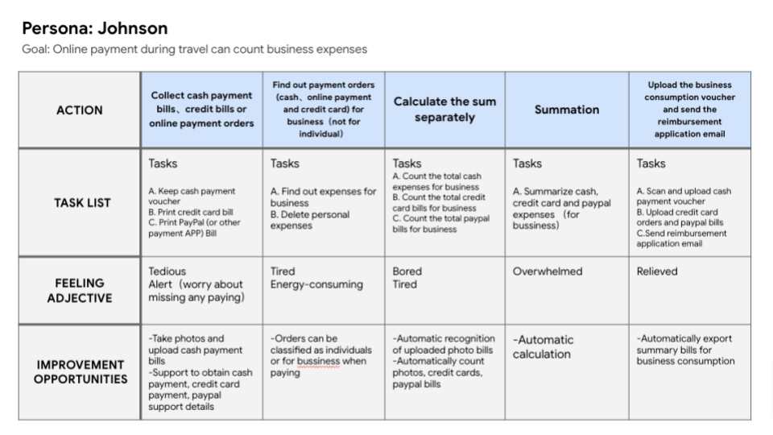
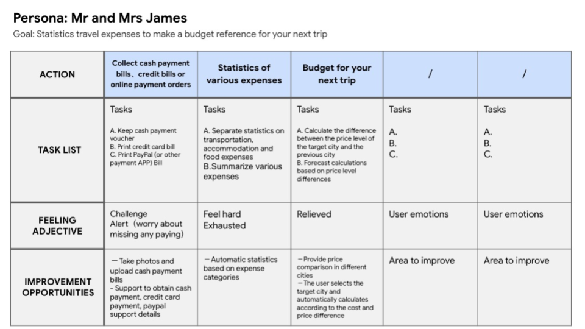
Competitive Audit
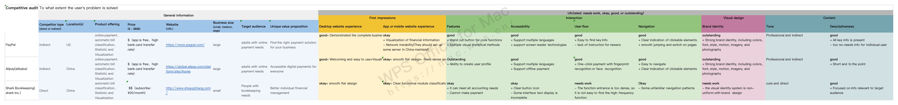
Ideation
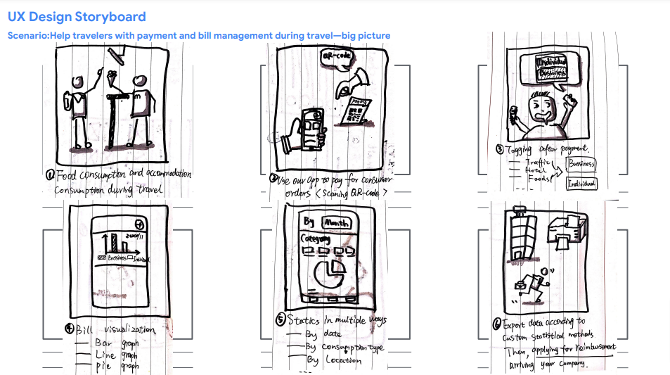
Imagine how the product can help users in a specific scenario and sketch it.
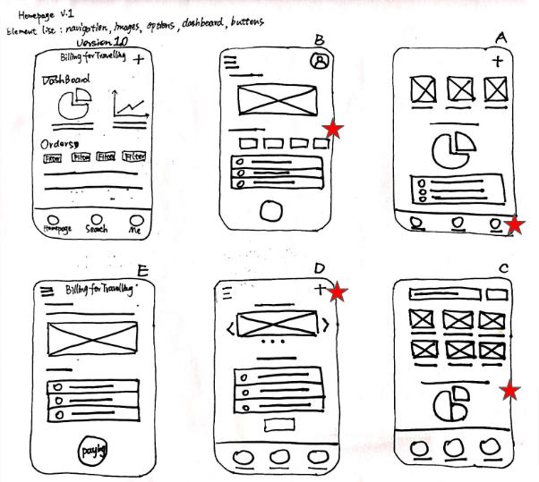
Follow industry standards and design principles, design wireframes and quickly draw them on paper.
LOW-FIDELITY
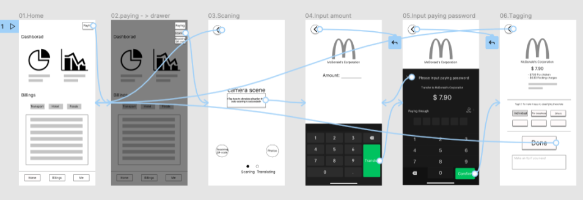
The low-fidelity prototype connected the primary user flow of paying for bills and tagging bills,so the prototype could be used in a usability study with users.
Usability study
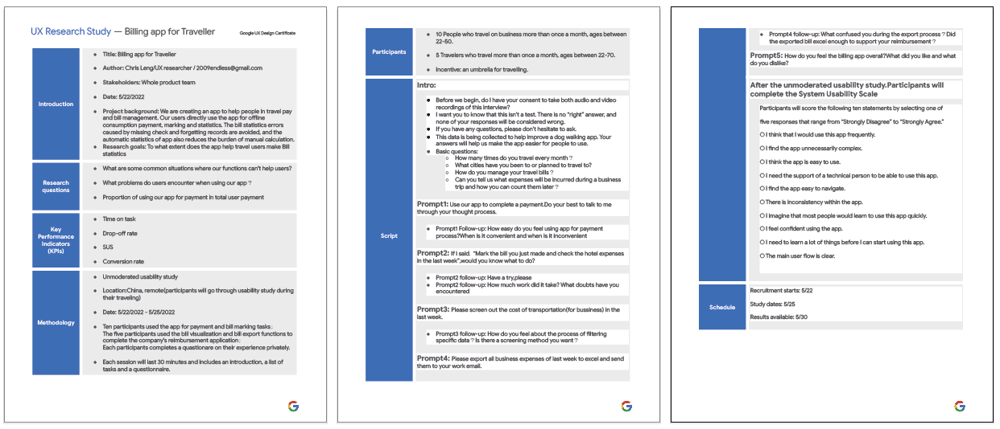
Formulate the usability research plan, conduct user testing according to the plan, draw the usability research conclusion after statistical analysis, and finally analyze the usability research report with the team.
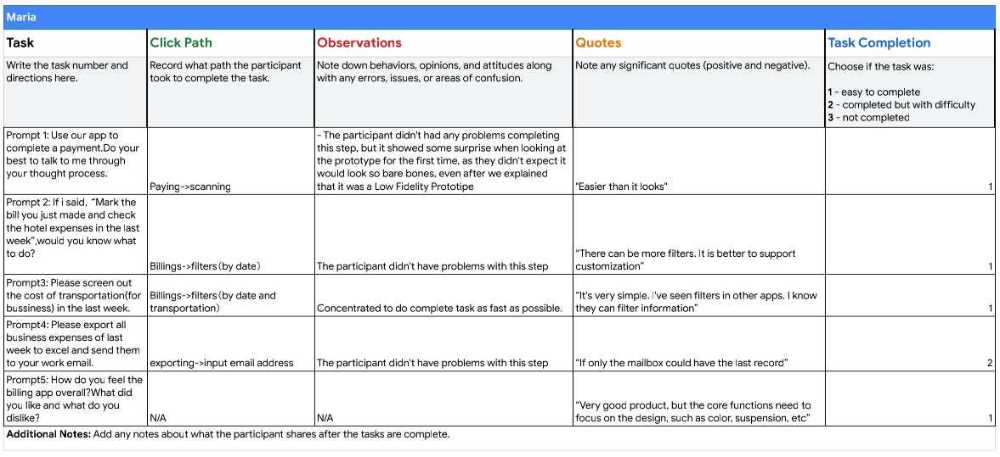
In my usability research, five volunteer users were invited. The picture on the right is a case study.